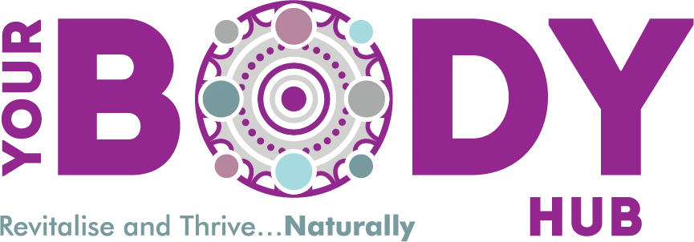

Brand Guideline
Brand Guideline
The visual identity system for Your Body Hub. Use this for every report, PDF, social asset and client-facing document so the brand looks consistent everywhere.
Version 1.0 · Derived from yourbodyhub.com.au · Prepared by Ready to Rank
1. Brand essence
Your Body Hub is an allied health & wellness clinic in Officer, Victoria — physiotherapy, exercise physiology, myotherapy, dietetics and more, under one roof. The brand feeling is warm, credible and human: clinical expertise delivered with genuine care.
Tagline
Revitalise and Thrive…Naturally
Voice & tone
- Warm & reassuring — we talk to people, not at patients. Plain English over jargon.
- Credible — evidence-based, qualified, trustworthy. Confident without hype.
- Australian English — organise, colour, optimise, recognise.
- Compliant — AHPRA-aware: no guaranteed outcomes, no patient testimonials about clinical care, no misleading claims.
2. Logo
The primary logo is the full "YOUR BODY HUB" wordmark with the circular mandala motif and the tagline. Use the full-colour version on light backgrounds wherever possible.
Clear space & minimum size
- Clear space: keep padding around the logo equal to the height of the "HUB" wordmark on all sides. Never crowd it with text or graphics.
- Minimum size: no smaller than 30 mm wide in print (or 150 px on screen) so the mandala detail stays legible.
The mandala motif
The circular mandala (the "O" in BODY) is a distinctive brand device. It can be used on its own — watermarked, as a section accent, or as a subtle background element — but always at low contrast so it never competes with content.
Do
- Use full-colour logo on white or soft lilac
- Maintain clear space and aspect ratio
- Reverse to a white/mono version on dark purple
Don't
- Stretch, squash or rotate the logo
- Recolour it or add shadows/outlines
- Place the full-colour logo on a busy photo or dark purple (low contrast)
Asset to produce: a reversed (white/mono) logo for use on the dark purple background — the current full-colour logo isn't legible on purple. Recommend requesting this from the original designer, or we can create one.
3. Colour palette
Purple leads, teal supports, lilacs and neutrals carry the rest. Use plenty of white space — this is a wellness brand, not a busy one.
Primary
Hub Purple
HEX #90278E · RGB 144,39,142
Primary. Headings, logo, key accents.
Deep Purple
HEX #6C2766 · RGB 108,39,102
Emphasis, buttons, "Book" CTA.
Vital Teal
HEX #62C4BB · RGB 98,196,187
Secondary accent, rules, highlights.
Secondary & tints
Slate Teal
HEX #779B9F · RGB 119,155,159
Muted accent, tagline, captions.
Lilac
HEX #E8D3E8 · RGB 232,211,232
Borders, table stripes.
Soft Lilac
HEX #F3E9F3 · RGB 243,233,243
Panel & callout backgrounds.
Neutrals
Soft Ink
HEX #6A6470
Captions, secondary text.
Paper
HEX #F6F4F3
Page / background fills.
Usage ratio: roughly 60% white/paper, 25% purple family, 10% teal family, 5% everything else. Purple for structure and headings; teal to draw the eye to one thing at a time.
4. Typography
Two Google Fonts, matching the website. Both are free and embed cleanly in PDFs.
Lato — Headings
Bold, confident, structural. Use weights 700 & 900.
AaBbCcDdEe 1234567890 · Aa Bb Cc
Nunito — Body
Friendly and rounded — fits the warm, "naturally" wellness tone. Use 400 for body copy, 600–700 for emphasis. This paragraph is set in Nunito at the standard body size so you can see how running text reads across a full line of a report.
Type scale (reports & PDFs)
| Element | Font | Weight | Size | Colour |
|---|
| H1 / Document title | Lato | 900 | 30px | Hub Purple |
| H2 / Section | Lato | 800 | 19px (teal underline) | Hub Purple |
| H3 / Sub-section | Lato | 700 | 13.5px | Deep Purple |
| Body | Nunito | 400 | 10.8px | Ink |
| Caption / small | Nunito | 400 | 9px | Soft Ink |
| Table header | Lato | 700 | 9.2px | White on Purple |
Fallbacks: if Lato/Nunito are unavailable (e.g. inside Google Docs without the add-on), substitute Montserrat (headings) and Open Sans (body) — both are on the website too and keep a similar feel.
5. Imagery & iconography
Photography style
- Real, warm, human — genuine clinic moments, practitioners with clients, natural light. Avoid sterile or overly "stocky" medical imagery.
- Diverse & local — all ages and abilities, reflecting the Officer/Cardinia community (active ageing, young athletes, families).
- Movement & care — hands-on treatment, exercise in the gym, reformer, demonstrations.
- Colour treatment — bright, clean, true-to-life. A subtle purple/teal accent (props, branded elements) ties images to the brand.
Graphic device
Use the mandala motif as a recurring graphic — a watermark behind cover titles, a divider between sections, or a corner accent. Keep it low-contrast (lilac on white, or white at low opacity on purple).
Icons
Simple line icons, single-weight strokes, in Hub Purple or Slate Teal. Avoid filled, multi-colour or cartoonish icon sets — they fight the clean wellness aesthetic.
Do
Natural light · real people · clean backgrounds · purple/teal accents · generous white space
Don't
Cheesy stock smiles · clinical/cold imagery · heavy filters · cluttered collages · clashing bright colours
6. Layout & components
These are the reusable building blocks every Your Body Hub document is made from. They all live in brand.css — apply the class and it's automatically on-brand.
Callout box .callout
Used to highlight a key takeaway or important context. Soft lilac fill with a purple left bar.
Note / compliance box .note
Note. For caveats, compliance flags, and "to confirm" items. Lighter, bordered, slightly smaller text.
Lead / feature panel .lead
Feature label
For the single most important item on a page — a headline stat, a monthly theme, a key offer.
Pills / tags .pill
PhysiotherapyDietitianExercise PhysiologyMyotherapy
Call-to-action labels
Three CTAs, colour-coded by funnel stage, used across all marketing docs:
| CTA | Style | Funnel stage |
|---|
| BOOK | Deep Purple, bold | Bottom — ready to act |
| DOWNLOAD GUIDE | Slate Teal, bold | Mid — problem-aware |
| SUBSCRIBE | Hub Purple, bold | Top — nurture |
Tables
| Column A | Column B | Column C |
|---|
| Purple header row | Lilac zebra striping | Lilac borders |
| Lato header font | Nunito body font | Compact padding |
7. Applying the template
Every new Your Body Hub PDF/report starts from the same two files so consistency is automatic — no re-styling each time.
The files
| File | What it is |
|---|
| brand.css | The master stylesheet. All colours, fonts and components. Never restyle in the document — change it here once and every doc updates. |
| _template.html | A blank boilerplate (cover + sample sections) to copy for any new report. |
| assets/ | Logo files (and, once produced, the reversed logo + mandala graphic). |
Workflow
- Copy _template.html, rename it for the new report.
- Write content using the components above (.callout, .note, .lead, .pill, tables, CTA classes).
- Render to PDF with headless Chrome (--print-to-pdf). Fonts and styles come straight from brand.css.
- Need a brand-wide change? Edit brand.css only.
Result: every report, calendar, proposal and one-pager shares the same cover, colours, type and components — instantly recognisable as Your Body Hub.
Brand Guideline v1.0 · Derived from the live website identity · Supersede with any official designer spec if one exists. Prepared by Ready to Rank.